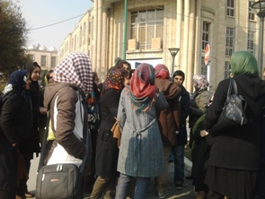
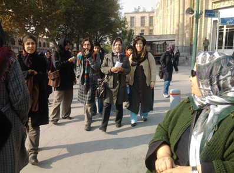

|
|
|
Browsing
Contact Us |
Campaigners |
Face to Face |
Tribune |
Interview |
News |
On the Web |
One Million |
Report
Farsi | Français | German | Italian | Spanish | العربية Also in this section
|

Women Gather Outside the Tehran Public Prosecutor’s Office, Enquiring about Nasrin Sotoudeh’s ConditionMonday 3 December 2012 Change for Equality: Tens of women’s rights activists have expressed their concerns about Nasrin Sotoudeh’s deteriorating condition in a letter which they delivered in person to the Tehran Public Prosecutor’s Office on the morning of Sunday 2nd December. As of today, 3rd December, Nasrin Sotoudeh has been on hunger strike for forty-seven days. In the letter, addressed to the Public Prosecutor General for Tehran, Mr Jafari-Dowlatabadi, while declaring their support for Nasrin Sotoudeh’s demands, they demanded that she be transferred immediately to an appropriately equipped hospital. The women’s activists sought to meet with the Public Prosecutor General for Tehran but were told this was impossible, and handed the letter over to his deputy, Mr Khodabakhshi, instead.
 The deputy prosecutor opined that only Nasrin’s family were allowed to seek information about her case. The activists, however, stated that Nasrin’s condition had a special importance for them, not only because of its human dimensions, but in particular because she is one of those lawyers committed to the women’s movement. They therefore considered it their duty to make enquiries about her condition. Nasrin Sotoudeh has been on hunger strike, for the fifth time, since 14th October, and this is the forty-seventh day of her strike. Her only demand is that the pressures on her family cease. She is demanding in particular that the travel ban on her daughter Mehraveh be lifted. The prosecutor has issued an order forbidding her to leave the country.
 According to Nasrin Sotoudeh herself, her hunger strike will be of unlimited duration. The ongoing hunger strike has provoked a wave of concern among civil society and women’s activists. One of those present at the prosecutor’s office indicated that they had resolved to take up Nasrin’s condition with other legal authorities. |